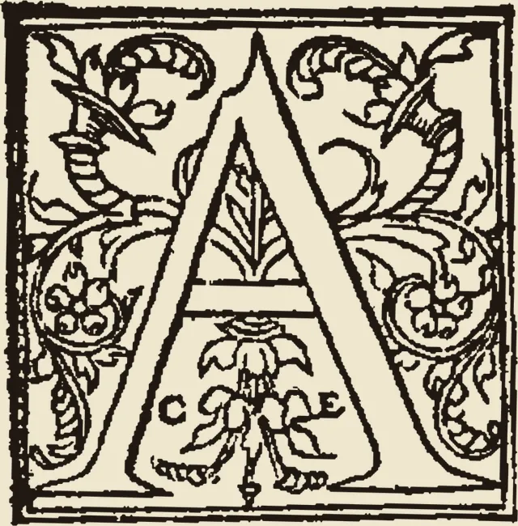

Ars GrammaticaThis course teaches the doctrines of the art of grammar; but to acquire the art in itself students must read widely and write at length and in depth.
The study and exercises here build the art’s foundation: its rules, examples, and figures must be learned and drilled. But the art of grammar itself, that is, the art of correct speech and interpretation, is perfected only by use: wide reading and extensive writing (cf. Augustine, De doctrina christiana IV.3.4–5; Cicero, De oratore I.150). Students should therefore go as deeply as they wish into the doctrine and exercises here, but they should not think this course can replace a wide knowledge of good authors and long practice in writing.
How much of the course to study. Each level adds to the one before it, from the basics to the whole course.
Free Practice opens any exercise you like. The Guided Path takes the exercises in order, tells you when each is passed, and brings them back for review.
English and Latin run through the course. Add Greek, Spanish, German, or French as you wish, one or several.
Every language’s material for this level is shown.
All languages is not offered on the Guided Path, so English is chosen.
This browser is not permitting storage, so progress will last only for this visit. The Export button under Progress & Review keeps a copy.
Where to begin. Begin with the first section, What Is Grammar?, and go on in order. Most sections have studies, which are short sets of cards to read slowly, and exercises that test what the studies teach. Read a study before its exercises.
Passing an exercise. Some exercises have stages, from Stage I up to Stage IV at most, and each stage is more demanding than the last. On the Guided Path, an exercise is passed when nine of your last ten answers are correct, on at least two different days; in an exercise with stages, only the answers at the stage required for a pass, or a higher one, count. Your record is kept at every level. But a higher level can open further stages of an exercise, and the exercise may then have to be passed or confirmed again at those stages.
Confirming an exercise. A passed exercise is confirmed ★ at a Confirmation sitting on a later day, with nine of ten questions correct.
Review. The questions you answer return for review on a widening schedule, from one day to thirty days, and a missed question returns the next day. On the Guided Path, Progress & Review shows what to learn next and what is due for review.
Keeping progress. The Guided Path keeps its record only once tracking is turned on under Progress & Review. Each level keeps its own place, so you can change level and come back to where you were. Your record is kept only in this browser. Use “Export progress” under Progress & Review to keep a copy.
Also. The Recitation Tablet, at the top left, is for reciting a whole subject in your own words and checking it against the full recitation.
Designed and directed by Timothy Kearns, Ph.D. AI tools were used for drafting some of the study sections and for building the interactive exercises and answer keys.
Choose the sets to draw from. For each set, choose Set A, B, or C, or any set, and the number of questions to take from it. The questions keep the order in which they are stored, from easier to harder, and no question appears twice. The Latin sets that are drawn fresh give new questions each time.
Turn on doctrine questions to add questions on the teaching of the decks behind the chosen sets. Then make the quiz, read it over, and print it or save it as a PDF. The answer key prints on a separate page.